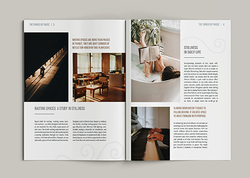
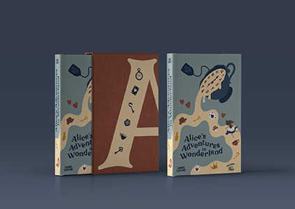
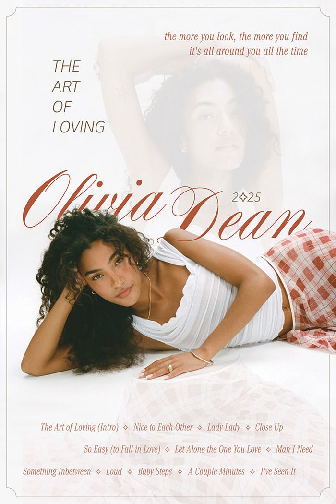
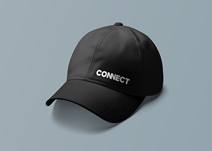
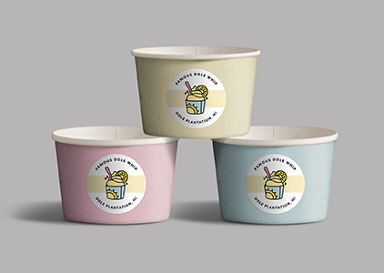
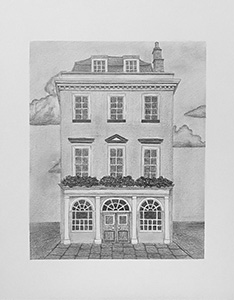
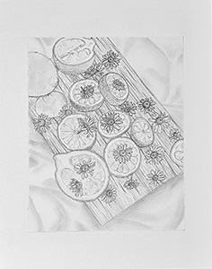
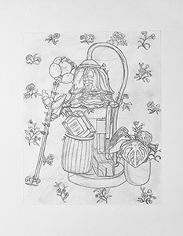

Gallery
A curated selection of projects ranging from editorial and branding design to illustration and fine art drawings.
Editorial Design
The Power of Pause – cover spread
Editorial layout – The Beauty of Pause

Editorial spread – Waiting Spaces
Book Design

Alice in Wonderland – front & slipcase
Back cover & slipcase details
Full jacket mockup
Map of Wonderland spread
Music Poster Design

Poster – Olivia Dean: The Art of Loving
Poster Mockup – Olivia Dean: The Art of Loving
Personal Poster Design
Poster – I Feel So Deeply
Poster – I Feel So Deeply
Branding – CONNECT 2025 Conference
Billboard advertising – CONNECT 2025

Conference merch – Connect hat
Event lanyards – CONNECT 2025
Branding – Dole Plantation

Dole Whip packaging cups
Dole Plantation icon set
Dole Plantation t-shirt
Fine Art – Graphite Drawings
Portrait study – graphite realism

Architectural drawing – building elevation

Still life – lemons and daisies

Line drawing – floral still life
Landscape drawing – mountain scene
Graphite drawing – figure study with flower